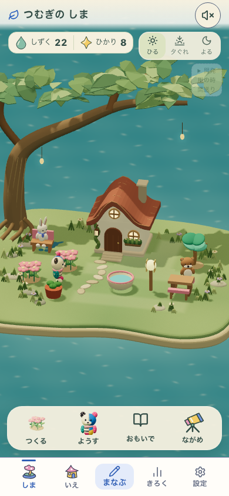
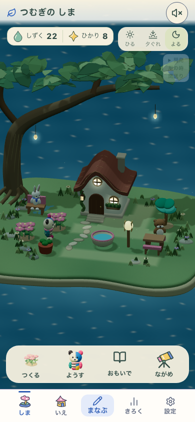
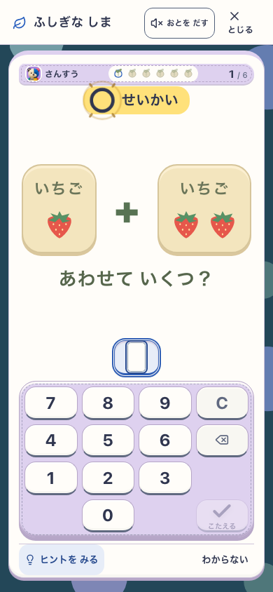
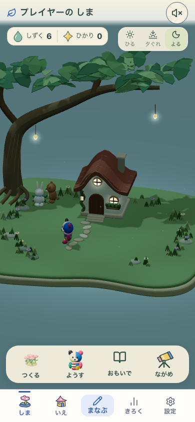
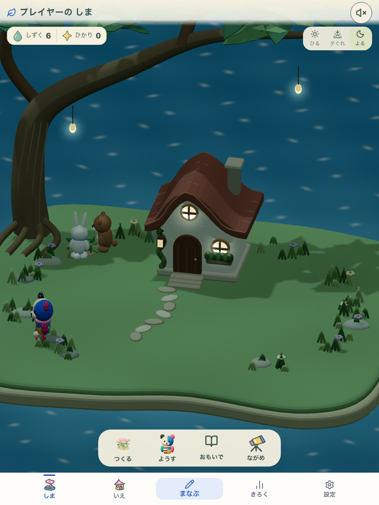

元のぽこもこと、修正後の実画面
候補 living-fantasy-garden-v2。これは検証時の画面記録です。実際に操作するプレビュー · 検証条件と残件
既存デザインとの比較




実アプリの一連の流れ · 390×844
同じproduction形式のbuild、本人の初回設定と実回答、実際の購入/配置、Service Workerによるオフライン再起動。検査専用の新規プロフィールで確認した画面であり、利用中の本人データを書き換えていない。



タブレットの確認 · 768×1024
